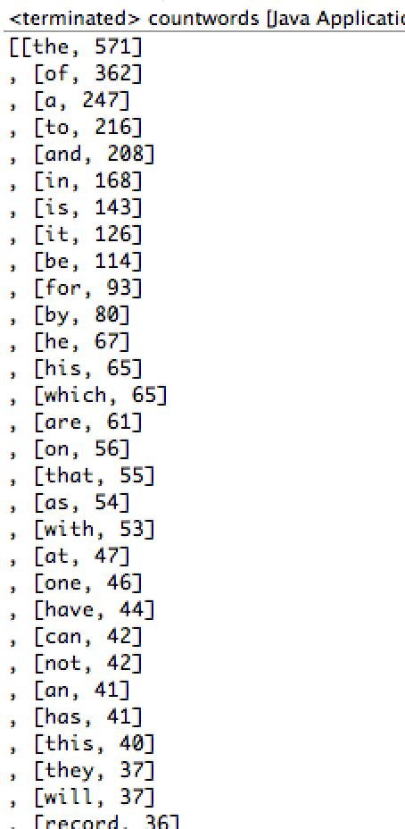

Week 12 Ex. 2: Improve the code so it changes all words to lowercase before comparing.
Output:

Source Code:
package CSIS2420unit2;
//Using TreeMaps
//Count how many times each word appears
import java.io.*;
import java.util.*;
public class countwords {
public static void main (String[] args) throws IOException{
String [] wordArray = utilities.fileToStringArray("awmt.txt");
List wordList = Arrays.asList(wordArray); //All the words in text
TreeMap tm = new TreeMap();
String key;
Integer value;
Iterator it = wordList.iterator();
while(it.hasNext()){
key = it.next().toLowerCase();
value = tm.get(key);
if(value==null){
tm.put(key,1);
}
else{
tm.put(key,value+1);
}
}
Set allKeys = tm.keySet();
Iterator ki = allKeys.iterator();
/*
while (ki.hasNext()){
key = ki.next();
value = tm.get(key);
System.out.println(key+" -> "+value);
}
*/
OrderedPair[] opArray = new OrderedPair[allKeys.size()];
int index = 0;
while(ki.hasNext()){
key = ki.next();
value = tm.get(key);
opArray[index++] = new OrderedPair(key,value);
}
List opList = Arrays.asList(opArray);
Collections.sort(opList);
System.out.println(opList);
}
}